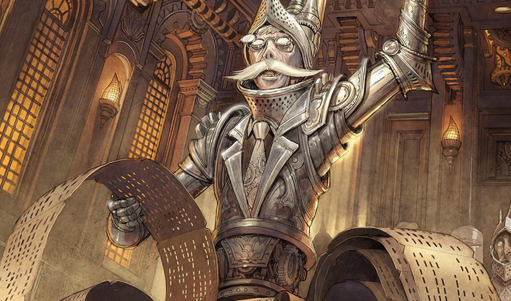
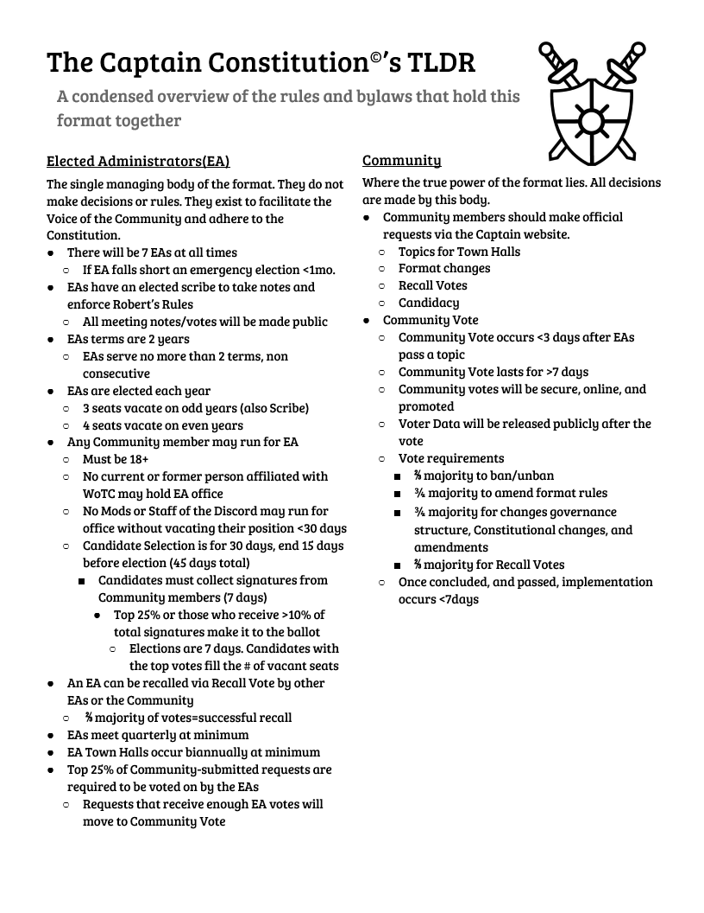

Deck Construction Rules
How to construct a deck for the MTG Captain format.
- Players choose a legendary creature as the Captain for their deck.
- A card’s colour identity is its color plus the colour of any mana symbols in the card’s rules text. A card’s color identity is established before the game begins, and cannot be changed by game effects. The cards in a deck may not have any colours in their color identity which are not in the colour identity of the deck’s Captain.
- A Captain deck must contain exactly 100 cards, including the Captain. If you’re playing a companion, it must adhere to color identity and singleton rules. While it is not part of the deck, it is effectively a 101st card.
- With the exception of basic lands, no two cards in the deck may have the same English name. Some cards (e.g. Relentless Rats) may have rules text that overrides this restriction.
Game Play Rules
Rules to follow while in a game of MTG Captain format.
- Players begin the game with 40 life.
- Captains begin the game in the Command Zone. While a Captain is in the command zone, it may be cast, subject to the normal timing restrictions for casting creatures. Its owner must pay for each time it was previously cast from the command zone; this is an additional cost.
- Each Captain begins the game in the Command Zone. While a Captain is in the command zone, it may be cast, subject to the normal timing restrictions for casting creatures. Its owner must pay ( 2 ) for each time it was previously cast from the command zone; this is an additional cost.
- If a Captain is in a graveyard or in exile and that card was put into that zone since the last time state-based actions were checked, its owner may put it into the command zone. If a Captain would be put into its owner’s hand or library from anywhere, its owner may put it into the command zone instead. This replacement effect may apply more than once to the same event.
- Being a Captain is not a characteristic [MTG CR 109.3], it is a property of the card and tied directly to the physical card. As such, “Captain-ness” cannot be copied or overwritten by continuous effects. The card retains it’s Captain-ness through any status changes, and is still a Captain even when controlled by another player.
- If a player has been dealt 21 points of combat damage by a particular captain during the game, that player loses a game.
- Captains are subject to the Legend rule; a player cannot control more than one legend with the same name.
- Abilities which bring other card(s) you own from outside the game into the game
(such as Living Wish; Spawnsire of Ulamog; Karn, the Great Creator) do not function in Captain.
Comprehensive Rules
In depth rules specific to the MTG Captain format.
| Rule # | Comprehensive Rule Text |
|---|---|
| 903.13 | The Captain Format |
| 903.13a | Captain is a community driven format. Captain games use the normal rules for the Commander variant with the following modifications. |
| 903.13b | Captain is managed by its community, who maintain additional resources at www.MTGCaptain.cards |
| 903.13c | Players of the Captain Format informally refer to their Commanders as “Captains” |
| 908.1 | In the Captain variant, each deck is led by a legendary creature designated as that deck’s Captain. MTG Captain is a format that is managed and curratited by its community www.MTGCaptain.cards. The Captain variant uses all the normal rules for a Magic game, with the following additions. |
| 908.2 | A Captain game may be a two-player game or a multiplayer game. The default multiplayer setup is the Free-for-All variant with the attack multiple players option and without the limited range of influence option. See rule 806, “Free-for-All Variant.” |
| 908.3 | Each deck has a legendary creature card designated as its Captain. This designation is not a characteristic of the object represented by the card; rather, it is an attribute of the card itself. The card retains this designation even when it changes zones.
Example: A Captain that’s been turned face down (due to Ixidron’s effect, for example) is still a Captain. A Captain that’s copying another card (due to Cytoshape’s effect, for example) is still a Captain. A permanent that’s copying a Captain (such as a Body Double, for example, copying a Captain in a player’s graveyard) is not a Captain. |
| 908.3a | Some planeswalker cards have an ability that states the card can be your Commander. Such planeswalker cards can be your Captain. This ability modifies the rules for deck construction, and it functions before the game begins. See rule 113.6m. |
| 908.3b | If a player’s Captain is a meld card and it’s melded with the other member of its meld pair, the resulting melded permanent is that player’s Captain. |
| 908.3c | If a player’s Captain is a component of a merged permanent, the resulting merged permanent is that player’s Captain. |
| 908.3d | If an effect refers to controlling a Commander, it refers to a permanent on the battlefield that is a Captain. If an effect refers to casting a Captain, it refers to a spell that is a Captain. If an effect refers to a Commander in a specific zone, it refers to a card in that zone that is a Captain. |
| 908.4 | The Captain variant uses color identity to determine what cards can be in a deck with a certain Captain. The color identity of a card is the color or colors of any mana symbols in that card’s mana cost or rules text, plus any colors defined by its characteristic-defining abilities (see rule 604.3) or color indicator (see rule 204).
Example: Bosh, Iron Golem is a legendary artifact creature with mana cost {8} and the ability “{3}{R}, Sacrifice an artifact: Bosh, Iron Golem deals damage equal to the sacrificed artifact’s converted mana cost to any target.” Bosh’s color identity is red. |
| 908.4a | Color identity is established before the game begins. |
| 908.4b | Reminder text is ignored when determining a card’s color identity. See rule 207.2. |
| 908.4c | The back face of a double-faced card (see rule 711) is included when determining a card’s color identity. This is an exception to rule 711.4a.
Example: Civilized Scholar is the front face of a double-faced card with mana cost {2}{U}. Homicidal Brute is the back face of that double-faced card and has a red color indicator. The card’s color identity is blue and red. |
| 908.5 | Each Captain deck is subject to the following deck construction rules. |
| 908.5a | Each deck must contain exactly 100 cards, including its Captain. In other words, the minimum deck size and the maximum deck size are both 100. |
| 908.5b | Other than basic lands, each card in a Captain deck must have a different English name. |
| 908.5c | A card can be included in a Captain deck only if every color in its color identity is also found in the color identity of the deck’s Captain.
Example: Wort, the Raidmother is a legendary creature with mana cost {4}{R/G}{R/G}. Wort’s color identity is red and green. Each card in a Wort Captain deck must be only red, only green, both red and green, or have no color. Each mana symbol in the mana cost or rules text of a card in this deck must be only red, only green, both red and green, or have no color. |
| 908.5d | A card with a basic land type may be included in a Captain deck only if each color of mana it could produce is included in the Captain’s color identity.
Example: Wort, the Raidmother’s color identity is red and green. A Wort Captain deck may include land cards with the basic land types Mountain and/or Forest. It can’t include any land cards with the basic land types Plains, Island, or Swamp. |
| 908.6 | At the start of the game, each player puts their Captain from their deck face up into the Command Zone. Then each player shuffles the remaining 99 cards of their deck so that the cards are in a random order. Those cards become the player’s library. |
| 908.7 | Once the starting player has been determined, each player sets their life total to 40 and draws a hand of seven cards. (Command Zone shouldn’t change as it is a supported zone in magic. For example, emblems go in the Command Zone) |
| 908.8 | A player may cast a Captain they own from the Command Zone. A Captain cast from the Command Zone costs an additional {2} for each previous time the player casting it has cast it from the Command Zone that game. This additional cost is informally known as the “Commander Tax.” (Commander Tax might not be worth changing similar to Command Zone) |
| 908.9 | A Captain may return to the Command Zone during a Captain game. |
| 908.9a | If a Captain is in a graveyard or in exile and that card was put into that zone since the last time state-based actions were checked, its owner may put it into the Command Zone. This is a state-based action. See rule 704. |
| 908.9b | If a Captain would be put into its owner’s hand or library from anywhere, its owner may put it into the Command Zone instead. This replacement effect may apply more than once to the same event. This is an exception to rule 614.5. |
| 908.9c | If a Captain is a melded permanent or a merged permanent and its owner chooses to put it into the Command Zone using the replacement effect described in rule 903.9b, that permanent and each component representing it that isn’t a Captain are put into the appropriate zone, and the card that represents it and is a Captain is put into the Command Zone. |
| 908.10 | The Captain variant includes the following specification for winning and losing the game. All other rules for ending the game also apply. See rule 104. |
| 908.10a | A player that’s been dealt 21 or more combat damage by the same Captain over the course of the game loses the game. This is a state-based action. See rule 704. |
| 908.11 | If a player is allowed to bring a card from outside the game into a Captain game, that player can’t bring a card into the game this way if it has the same name as a card that player had in their starting deck, if it has the same name as a card that the player has already brought into the game, or if any color in its color identity isn’t in the color identity of the player’s Captain. |
903.13 - The Captain Format
903.13a - Captain is a community driven format. Captain games use the normal rules for the Commander variant with the following modifications.
903.13b - Captain is managed by its community, who maintain additional resources at https://MTGCaptain.Cards
903.13c - Players of the Captain Format informally refer to their Commanders as “Captains”
In the event of sufficient divergence from Commander, The Comprehensive Rules should be rewritten into 90X following the formatting of other casual variants.
Comprehensive Rules
Community Constitution
For a more in depth social and communal rules listing click (HERE).
